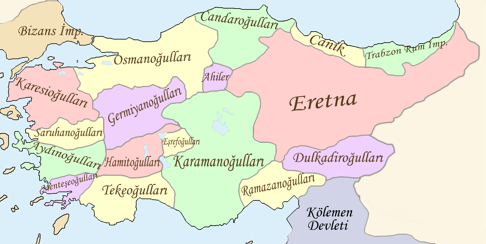

2. Ünite: Kültür ve Miras
İkinci Anadolu Beylikleri ve Yerleri
- Osmanoğulları : Söğüt, Domaniç
- Karesioğulları : Balıkesir, Çanakkale
- Saruhanoğulları : Manisa
- Aydınoğulları : Aydın, İzmir
- Menteşeoğulları : Muğla
- Tekeoğulları : Antalya
- Eşrefoğulları : Konya
- Hamitoğulları : Isparta
- Germiyanoğulları : Kütahya, Uşak
- Candaroğulları : Kastamonu, Bolu
- Pervaneoğulları : Sinop
- Taceddinoğulları : Samsun
- Eretna Devleti : Sivas
- Karamanoğulları : Konya, Karaman
- Ramazanoğulları : Adana
- Dulkadiroğulları : Maraş

Osmanlı Beyliği
13. Yüzyılda Orta Asya'daki Moğol Baskısından Kaçan ertuğrul Gazi ve Kayı Boyu, Türkiye Selçuklu Devleti Zamanında Anadolu'ya Geldi. Bir Süre Ankara Yakınlarındaki Karacadağ
Bölgesine Yerleştirildikten Sonra Uç Beyliği Olarak Bizans Sınırında Bulunan Söğüt ve Domaniç'e taşındılar. Ertuğrul Gazi'den Sonra Yerine Geçen Oğlu Osman Bey, Türkiye Selçuklu
Devleti'nin Zayıflaması Üzerine 1299 Yılında Bağımsızlığını İlan Etti.
BAĞLI OLDUĞU BOY : KAYI BOYU
KURUCUSU : OSMAN BEY
KURULUŞ YILI : 1299
KURULDUĞU YER : SÖĞÜT - DOMANİÇ
Osmanlı Devleti'nin Kısa Sürede Büyüme Nedenleri
- Coğrafi Konumunun Sağladığı Avantajlar
- Osmanlı'nın Konumu sınırda olduğu için diğer beylijklerle kavga etmeden sınırını gelişletebildi.
- İstimalet Politikası
- Diğer Beyliklere ve Fethettiği ülkelere Hoşgörülü bir şekilde yaklaşmıştır.
- Bizans'ın Güçsüz Olması
- İç kavgalar sayesinde Osmanlı Güçsüz Bizans Üzerinden Kolayca Fetihlerine Devam Edebildi.
- İskan Politikası
- Fethedilen topraklara Türk ve Türkmenleri atayarak iç kavgaları bastırdı.
- Güçlü Devletin Var Olmayışı
- O dönemlerde "Süpergüç" sayılabilecek bir millet yokta yani herkes başkası için avdı.
- Yetenekli Padişahlar
- O dönemlerde Padişahlar iyi yetiştirildiği için padişahlar stratejik ilerlemiştir.
- Diğer Beyliklerle Barış
- İlk Yıllarda Diğer Beyliklere saldırmadan toprak elde etti (Çeyiz ve satın alım).
- Ahi Teşkilatı
- Dönemin bilginlerinden oluşan Ahi Teşkilatı Osmanlı'nın Fethettiği yerlerde barış sağlamıştır.
Osmanlı İlk Dönemleri
Osman Bey Dönemi
- 1288'de Karacahisar'ı Fethetti
- 1299'da Bağımsızlığını İlan Etti.
- İnegöl, Bilecik, Yarhisar ve Yenişehir Alındı (Bizans'tan).
- Bilecik'i Başkent Yaptı
- İlk Osmanlı Parasını Bastı
- 1302'de Bizans ile Olan İlk Savaşı Yani Koyunhisar Savaşını Kazandı
Orhan Bey Dönemi
- Bursa'yı Fethederk Başkent Yaptı
- Maltepe Savaşını Kazandı, İznik ve İzmit'i Aldı
- Karesioğullarını Topraklarına Katıp İlk Deniz Donanmasına Sahip Oldu
- Bizans'a Yardım Edip Çinpe Kalesini Aldı. Bu Sayede İlk Defa Rumeliye Geçildi
- Yaya ve Müsellem Adlarıyla İlk Düzenli Orduyu Kurdu
- İznik'te İlk Medrese Açıldı
Osmanlı'daki Sistemler
Tımar Sistemi
- Bir Komutana Toprak verilerek o toprağın hem işlenmesi, hem de cebelü denilen sipahi yetiştirmesi istenir. Topraktaki gelirle asker yetiştiren komutan bu gelirle kendi maaşını da elde etmiş olur.
Devşirme Sistemi
- Alınan topraklardaki yabancı kökenli çocukları alınıp acemi ocağına götürülür, yetenekleri sınandıktan sonra gerekli ocakta yeteneğinde ustalaşması sağlanır.
Divan
Divan : Osmanlı'da kullanılan danışma meclisi
Divan üyeleri
- Sadrazam : Baş Vezir
- Vezirler : Askeri ve Siyasi Yardımcılar
- Kazasker : Eğitim ve Adaletten Sorumlu
- Defterdar : Maliye ve Ekonomiden Sorumlu
- Nişancı : Resmi Fermanlarda Padişah Tuğrasını Çeker
- Reissülküttap : Elçilerden Sorumlu
- Şeyhülislam : Alınan Kararın Dine Uyup Uymadığı Kontrol Edilir.
- Kaptan-ı Derya : Deniz Komutanı
Kuruluş Dönemi
- 1. Murat
- 1363 yılında Edirne'yi fethederek başkent yaptı.
- Haçlılar ile olan ilk savaşı (Sırpsındığı Savaşı) kazandı.
- Germiyanoğulları'ndan çeyiz yoluyla Kütahya'yı, Hamitoğulları'ndan para yoluyla Isparta'yı aldı.
- Devşirme Sistemini ve Yeni Çeri Ocağı'nı kurdu.
- İlk defa "Sultan" ünvanını aldı.
- İlk defa Tımar Sistemi'ni uyguladı.
- 1.Kosova savaşında Haçlılar'ı yendi fakat savaş alanını gezerken bir Sırp tarafından bıçaklandı.
- 1. Beyazid (Yıldırım)
- İstanbulu kuşatan ilk padişahtır.
- Niğbolu savaşını kazandı.
- Anadoludaki Türk Beyliklerini alarak siyasi birliği sağladı.
- Anadolu Hisarı'nı yaptı.
- Timur'a karşı yaptığı Ankara Savaşını kaybetti ve esir düştü.
- 11 yıllık Fetret (duraklama) Devri başladı.
- 1. Mehmed (Çelebi)
- Fetret Devri'ne son vererek ülkeyi yıkılıştan kurtardığı için ikinci kurucu da denir.
- İlk deniz savaşını Venedikler'le yaptı.
- 2. Murat
- İstanbul'u kuşattı fakat alamadı.
- Edirne-Segedin anlaşması ile tahtı 12 yaşındaki oğluna bıraktı.
- "Eğer Padişahsan tahtının başına geç. Eğer ben padişahsam sana emrediyorum tahtının başına geç." diyen oğlunun ısrarı ile tahta geri geçti.
- Varna Savaşını Kazandı.
- 2. Kosova'yı kazanarak Avrupalılar'a Anadolu'nun onların olduğunu söyledi.
İstanbul'un Fethi
Nedenler
- Siyasi Nedenler
- Bizans'ın diğer beylikleri Osmanlı üzerine kışkırtması.
- Toprak bütünlüğünün bozulması.
- Osmanlı'nın arkada tehdit mırakmak istememesi.
- Ekonomik Nedenler
- Marmara Boğazı ve Akdeniz-Karadeniz ticaretinin kolaylaşması.
- Dini Nedenler
Osmanlı'nın Hazırlıkları
- Gelebilecek yardımları engellemek için Balkanlar'da asker tuttu.
- Rumeli Hisarı yapıldı.
- Surları yıkmak için "Şahi" adı verilen büyük toplar döktürüldü.
- Yürüyen kuleler yapıldı.
- Denizden kuşatma için büyük bir donanma hazırlandı.
- 72 gemi bir gecede Haliç'e indirildi.
- Anadolu ve Balkanlar'daki devletlerle barış yapıldı
Bizans'ın Hazırlıkları
- Haliç'i zincirlerle kapattı.
- İstanbul surları tamir edildi.
- Suda bile yanabilen Grejuva Ateşi yapıldı.
- Avrupa devletlerinden yardım istendi.
Fethin Sonuçları
- Türk Tarihi İçin
- Toprak Bütünlüğü Sağlandı
- Ticaret Yolları Denetim Altına Alındı
- İstanbul Başkent Oldu
- 2. Mehmet "Fatih" Ünvanını Aldı
- Osmanlı'nın İslam Dünyasındaki Saygınlığı Arttı
- Dünya Tarihi İçin
- Orta Çağ Bitti, Yeni Çağ Başladı
- Coğrafi Keşifler Başladı
- Derebeylik/Feodalite Zayıfladı
- Rönesans Başladı
Yavuz Sultan Selim
- Çaldıran Savaşı ile İran Padişahı Şah İsmail'i yenmiş, İran tehditini ortadan kaldırmıştır.
- Turnadağ Savaşı ile son Türk Beyliğine son verdi.
- Mısır Seferini Gerçekleştirdi
Mısır Seferinin Sonuçları
- Siyasi Sonuçları
- Suriye, Filistin ve Mısır; Osmanlı kontrolüne geçti.
- Halifeliğin alınması ile yönetim biçimi Teokrasi oldu.
- Ekonomik Sonuçları
- Baharat Yolu Osmanlı'nın Oldu.
- Dini Sonuçları
- Dini Eşyalar Osmanlı'nın Oldu.
Kanuni Sultan Süleyman
- 46 yıl tahtta kalmıştır.
- Adaleti sayesinde "Kanuni" ünvanını kazandı.
- Belgrat'ı aldı.
- Mohaç Savaşını kazanıp Macaristan'ı aldı.
- Fransa'ya Kapitülasyonlar verdi.
- Rodos Adası alındı.
- Preveze Deniz Savaşını kazandı.
- 1. Viyana Kuşatması'nı düzenledi fakat başarılı olamadı.
- Ömrünün çoğu seferlerde geçti ve Zigetvar seferinde hayatını kaybetti.
Coğrafi Keşifler
Sebepleri
- Yeni Ticaret Yolu Bulmak İçin
- Zengin Olma İsteği
- Coğrafya Bilgisinin İlerlemesi
- Pusulanın Gelişimi
- Gemilerin Gelişimi
- Efsane ve Hurafelere İnanmayan Cesur Gemiciler
Keşifler ve Kaşifler
- Bartelmi Diyaz : Ümit Burnu'nu Keşfetti
- Kristof Kolomb : Amerika Kıtasını Keşfetti
- Portekizli Vasko dö Gama : Hint Deniz Yolunu Keşfetti
- Ameriko Vespuçi : Amerika'nın Yeni Bir Kıta Olduğunu Keşfetti
- Macellan : Dünya'yı Dolaştı
Coğrafi Keşiflerin Sonuçları
- Hristiyanlık yayıldı.
- Dünya'nın yuvarlak olduğu kesinleşti.
- Yeni bitki ve hayvan türleri.
- Sömürgecilik başladı.
- Yeni ticaret yolları bulundu (Osmanlı için Kötü).
- Burjuva sınıfı zenginleşti.
- Rönesans başladı.
Rönesans
Bilimin önde ve Dinin geride olduğu dönemdir. Bu dönemde insanlar edebiyat, tarih, fizik gibi alanlarda yüksek miktarda ilerlemişlerdir. Leonardo Da Vinci, Picasso, Fibonacci gibi önemler isimler bulunmaktadır.
Reform
Papaların yalan söylediği anlaşılınca Marthin Luther öncülüğünde dinde yeniden yapılandırma olmuştur. Laikliğe geçilmiştir. yeni mezheplerin çıkmasıyla 100 yıl savaşları ortaya çıkmıştır.
Sanayi İnkılabı
İngiltere'de başlamış, Avrupa ülkelerine yayılmıştır. El emeğinden makine gübüne geçiş yapılmıştır.
Sanayi İnkılabının Sonuçları
- El Tezgahından Fabrikaya Geçildi
- İnsan Gücü Makine Gücü Oldu
- Köyden Kente Göç Arttı
- İşçi Sınıfı Ortaya Çıktı
- Sendikalar Kuruldu
- Ham Maddeye İhtiyaç Arttı
- Sömürgecilik Arttı
- Ham Madde Rekabetleri Sebebiyle 1. Dünya Savaşı Oldu
Fransız İhtilali
Sefalet ve hastalıklar içinde yaşayan fransız halkı, kraliyet ailesi ve din adamlarının zenginlikler içinde yaşadığını görünce monarşi yerine herkesin mutlu olduğu bir ülke isteyip ayaklanma başlatır.
Fransız İhtilalinin Sonuçları
- Yeni Çağ Kapandı, Yakın Çağ Başladı
- Mutlak Monarşi Yıkıldı, Cumhuriyet İlan Edildi
- Adaet, Eşitlik, Özgürlük, Milli İrade, Hak Gibi Kavramlar Çıkmaya Başladı
- Milliyetçilik Düşüncesi, Çoğu İmparatorluğun Yıkımına Yol Açmıştır
Fransız İhtilali ve Osmanlı
- Çıkan Kavramlar Yüzünden Osmanlı, İsyanları Bastırmak Amacıyla Tanzimat, 1. Meşrutiyet, 2. Meşrutiyet Gibi Fermanlar Yayınlamıştır.
Değişen Dünya, Değişen Osmanlı
Islahat Nedir?
- Islahat, İyileştirme - Düzeltme İçin Yapılan Değişimdir
- Avrupaya Karşı Askeri Üstünlüğü Kaybeden Osmanlı, Fetih Yapamadığı İçin Ekonomisi Daha Da Bozulmuştur
- Bu Duruma Çözüm Bulmak İçin Devlet Adamları Raporlar Yazmaya Başladı
- Bu Raporlardan En Önemlisi "Koçibey Risalesi"dir
- Islahatlar Ne Kadar Uğraşılsa da Sürekli ve Kalıcı Olmamıştır
Lale Devri
- İlk Elçilikler Oluşturuldu
- Çiçek Aşısı Bulundu
- Çini Atölyeleri Açılmıştır
- İtfaiye Teşkilatı Kurulmuştur
- Matbaa Kuruldu
- İlk Kağıt Fabrikası Kuruldu
- Mimari Gelişti
ÖNEMLİ:
Lale Devri, Avrupa Üstünlüğünün Kabul Edildiği İlk Dönemdir
3. Selim Dönemi
- Radikal Anlamda Islahat Yapan İlk Padişah
- Yaptığı Yeniliklerin Tümüne "Yeni Düzen" Anlamına Gelen "Nizam-ı Cedid" Yenilikleri Denmiştir
- Nizam-ı Cedid Adıyla Ordu Kurdu
- Ordu İçin İrad-ı Cedid Adıyla Hazine Kurmuştur
- Fransızca Resmi Yabancı Dil Oldu
- Daimi Elçilikler Açıldı
4
- İlk Devlet Matbaası Kuruldu
2. Mahmut Dönemi
- Divan-ı Hümayun'u Kaldırıp Nazırlıklar (Bakanlıklar) Kurdu
- Memurlara Pantolon ve Fes Zorunluluğu Getirildi
- İlk Nüfus Sayımını Yaptırdı
- Tımar Sistemini Kaldırıp Memurlara Maaş Bağladı
- İstanbul'da İlköğretim Zorunlu Hale Geldi
- İlk Kez Avrupa'ya Öğrenci Gönderildi
- İlk Türkçe Resmi Gazete Yayınlandı
- Yerli Malı Kullanımı Teşvik Edildi
Tanzimat Fermanı Maddeleri
- Herkesin mal, can ve namusuna saygı duyulacak.
- Herkes Kanun Önünde Eşit Olacak
- Herkes Gelirine Göre Vergi Ödeyecek
- Askerlik Vatan Görevi Olacak
- Özel Mülkiyet Hakkı Verilecek
- Açık Mahkemede Eşit Şartlarda Yargılanma Hakkı Verilecek
Ana Sayfa